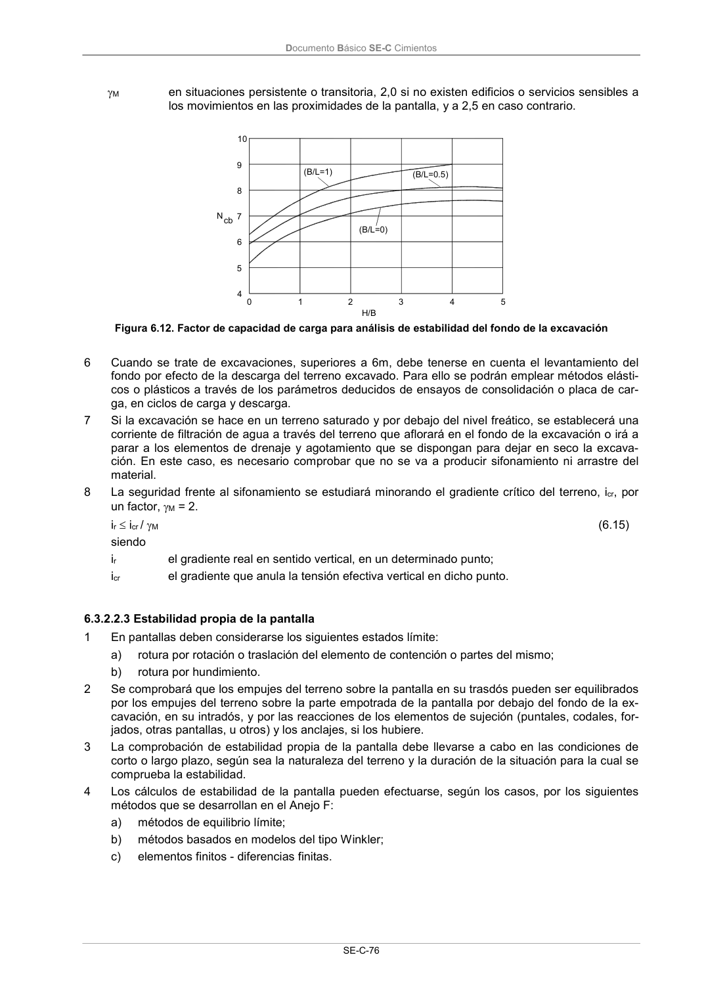

DB-SE-C · 6.3.2.2.3 Estabilidad propia de la pantalla · versión 2019-12-20
SHA256: a71133f4b0dca253e45ea3071c70f2a512354bcc5cd841bf89b1a502f567ac5e · página física 81 de 165 · métodos de encabezado
solo si están cotejados.
Formatos: Markdown · JSON de bloques · PDF p. 81 · imagen PNG
Documento Básico SE-C Cimientos SE-C-76 M en situaciones persistente o transitoria, 2,0 si no existen edificios o servicios sensibles a los movimientos en las proximidades de la pantalla, y a 2,5 en caso contrario. (B/L=1) (B/L=0) (B/L=0.5) 10 9 8 7 6 5 4 0 1 2 3 4 5 H/B Ncb Figura 6.12. Factor de capacidad de carga para análisis de estabilidad del fondo de la excavación 6 Cuando se trate de excavaciones, superiores a 6m, debe tenerse en cuenta el levantamiento del fondo por efecto de la descarga del terreno excavado. Para ello se podrán emplear métodos elásti- cos o plásticos a través de los parámetros deducidos de ensayos de consolidación o placa de car- ga, en ciclos de carga y descarga. 7 Si la excavación se hace en un terreno saturado y por debajo del nivel freático, se establecerá una corriente de filtración de agua a través del terreno que aflorará en el fondo de la excavación o irá a parar a los elementos de drenaje y agotamiento que se dispongan para dejar en seco la excava- ción. En este caso, es necesario comprobar que no se va a producir sifonamiento ni arrastre del material. 8 La seguridad frente al sifonamiento se estudiará minorando el gradiente crítico del terreno, icr, por un factor, M = 2. ir icr / M (6.15) siendo ir el gradiente real en sentido vertical, en un determinado punto; icr el gradiente que anula la tensión efectiva vertical en dicho punto. 6.3.2.2.3 Estabilidad propia de la pantalla 1 En pantallas deben considerarse los siguientes estados límite: a) rotura por rotación o traslación del elemento de contención o partes del mismo; b) rotura por hundimiento. 2 Se comprobará que los empujes del terreno sobre la pantalla en su trasdós pueden ser equilibrados por los empujes del terreno sobre la parte empotrada de la pantalla por debajo del fondo de la ex- cavación, en su intradós, y por las reacciones de los elementos de sujeción (puntales, codales, for- jados, otras pantallas, u otros) y los anclajes, si los hubiere. 3 La comprobación de estabilidad propia de la pantalla debe llevarse a cabo en las condiciones de corto o largo plazo, según sea la naturaleza del terreno y la duración de la situación para la cual se comprueba la estabilidad. 4 Los cálculos de estabilidad de la pantalla pueden efectuarse, según los casos, por los siguientes métodos que se desarrollan en el Anejo F: a) métodos de equilibrio límite; b) métodos basados en modelos del tipo Winkler; c) elementos finitos - diferencias finitas.
